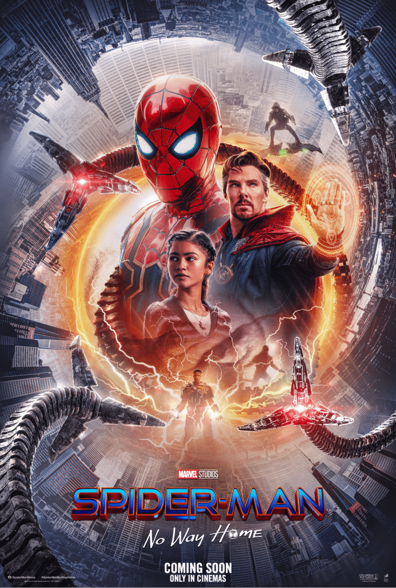

Diretor do filme: Jon Watts
Em Homem-Aranha: Sem Volta para Casa, Peter Parker (Tom Holland) precisará lidar com as consequências da sua identidade como o herói mais querido do mundo após ter sido revelada pela reportagem do Clarim Diário, com uma gravação feita por Mysterio (Jake Gyllenhaal) no filme anterior. Incapaz de separar sua vida normal das aventuras de ser um super-herói, além de ter sua reputação arruinada por acharem que foi ele quem matou Mysterio e pondo em risco seus entes mais queridos, Parker pede ao Doutor Estranho (Benedict Cumberbatch) para que todos esqueçam sua verdadeira identidade. Entretanto, o feitiço não sai como planejado e a situação torna-se ainda mais perigosa quando vilões de outras versões de Homem-Aranha de outro universos acabam indo para seu mundo. Agora, Peter não só deter vilões de suas outras versões e fazer com que eles voltem para seu universo original, mas também aprender que, com grandes poderes vem grandes responsabilidades como herói, quando começaram a exibir as primeiras sessões de Homem-Aranha: Sem Volta para Casa, todo mundo só queria saber de uma coisa: Tobey Maguire e Andrew Garfileld aparecem no filme? Antes de mais nada, é importante ressaltar que esta crítica não terá spoilers (ou, pelo menos, somente terá aqueles que já foram divulgados nos trailers). Logo, não irei responder essa pergunta (se você está lendo esse texto no futuro, saiba que isso era algo muito importante na época de lançamento do longa, um spoiler mal encaminhado pode ter até destruido amizades).Mas as pessoas estão esquecendo de algo muito importante: esse é, possivelmente, o último filme do Peter Parker de Tom Holland. Dentre todas as confusões do Multiverso, o foco da história é a jornada de amadurecimento desse jovem tão amado, dando um presente pros fãs em vários sentidos. Enquanto outras trilogias do Universo Cinematográfico Marvel col.
Confira abaixo o trailer: